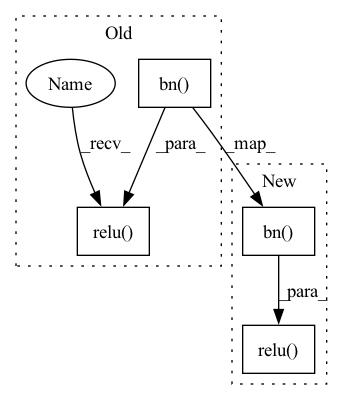

Pattern ID :8289
Before Change
skipxdo = self.do2(skipx)
out = self.relu(self.bn(self.up_conv(out)))
xcat = torch.cat((out, skipxdo), 1)
xcat = self.relu(self.bn( self.conv(xcat)) )
out = self.ops(xcat)
// print(out.shape, xcat.shape)
// assert 1>3
out = self.relu( torch.add(out, xcat))
return out
After Change
def forward(self, x, skipx):
out = self.relu(self.drop(self.bn(self.up_conv(x))))
xcat = torch.cat((out, skipx), 1)
xcat = self.relu( self.drop(self.bn( self.conv(xcat)) ))
out = self.ops(xcat)
// print(out.shape, xcat.shape)
// assert 1>3
In pattern: SUPERPATTERN
Frequency: 3
Non-data size: 4
Instances Fragment ID: 29074075
Project Name: junqiangchen/pytorchdeeplearing
Commit Name: e46edd9af5aee29ef03640c2c17f8f480a4c5168
Time: 2022-07-26
Author: 1207173174@qq.com
File Name: networks/VNet3d.py
M Class Name: UpTransition3d
N Class Name: UpTransition3d
M Method Name: forward(3)
N Method Name: forward(3)
M Parent Class: nn.Module
N Parent Class: nn.Module
M File Name: networks/VNet3d.py
N File Name: networks/VNet3d.py
M Start Line: 108
M End Line: 116
N Start Line: 73
N End Line: 79
Before Change
def forward(self, x, skipx):
out = self.do1(x)
skipxdo = self.do2(skipx)
out = self.relu(self.bn( self.up_conv(out)) )
xcat = torch.cat((out, skipxdo), 1)
xcat = self.relu(self.bn(self.conv(xcat)))
out = self.ops(xcat)
// print(out.shape, xcat.shape)
// assert 1>3
out = self.relu( torch.add(out, xcat))
return out
After Change
self.conv = nn.Conv2d(inChans, outChans, kernel_size=1)
def forward(self, x, skipx):
out = self.relu(self.drop(self.bn( self.up_conv(x)) ))
xcat = torch.cat((out, skipx), 1)
xcat = self.relu( self.drop(self.bn(self.conv(xcat))))
out = self.ops(xcat)
// print(out.shape, xcat.shape)
// assert 1>3
Fragment ID: 29074077
Project Name: junqiangchen/pytorchdeeplearing
Commit Name: e46edd9af5aee29ef03640c2c17f8f480a4c5168
Time: 2022-07-26
Author: 1207173174@qq.com
File Name: networks/VNet2d.py
M Class Name: UpTransition2d
N Class Name: UpTransition2d
M Method Name: forward(3)
N Method Name: forward(3)
M Parent Class: nn.Module
N Parent Class: nn.Module
M File Name: networks/VNet2d.py
N File Name: networks/VNet2d.py
M Start Line: 108
M End Line: 116
N Start Line: 73
N End Line: 79
Before Change
x = self.trans1(self.dense1(x))
x = self.trans2(self.dense2(x))
x = self.dense3(x)
x = self.bn( x)
x = self.relu( x)
x = self.avgpool(x)
x = x.view(x.size(0), -1)
x = self.fc(x)After Change
out = self.trans2(self.dense2(out))
out = self.trans3(self.dense3(out))
out = self.dense4(out)
out = F.avg_pool2d(F.relu( self.bn( out)) , 4)
out = out.view(out.size(0), -1)
out = self.linear(out)
return out Fragment ID: 29074071
Project Name: tuttelikz/farabio
Commit Name: 1e781dfbb0f4b2a6cae790f04cab2d6c8a4074bc
Time: 2021-05-10
Author: s.askaruly@gmail.com
File Name: farabio/models/classification/arch/densenet.py
M Class Name: DenseNet
N Class Name: DenseNet
M Method Name: forward(2)
N Method Name: forward(2)
M Parent Class: nn.Module
N Parent Class: nn.Module
M File Name: farabio/models/classification/arch/densenet.py
N File Name: farabio/models/classification/arch/densenet.py
M Start Line: 129
M End Line: 141
N Start Line: 76
N End Line: 84